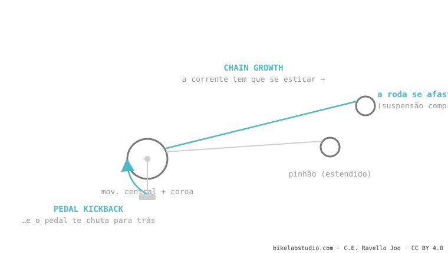

Quando a suspensão comprime, o eixo traseiro se afasta do movimento central e a corrente tem que se esticar: isso é o chain growth. Como a corrente está fixa no pinhão, esse esticão puxa os pedivelas para trás e te dá um tranco nos pés: o pedal kickback. Um pouco é necessário (gera anti-squat); demais incomoda. As bikes com axle path bem traseiro usam uma polia (idler) para neutralizá-lo.
Já sentiu um "tranquinho" nos pedais ao passar uma batida forte sem pedalar? Você não está louco nem é a sua bike quebrada. Tem nome e tem causa.
Imagine uma corda amarrada a dois postes. Se você afasta os postes, a corda tensiona e puxa os dois. A sua corrente faz o mesmo quando a roda se afasta do movimento central.

1. Chain growth: ao comprimir a suspensão, cresce a distância entre a coroa e o pinhão. A corrente precisa de mais comprimento do que tem. 2. A corrente puxa: como está engrenada no cassete, esse esticão se transmite à coroa. 3. Pedal kickback: a coroa gira um tantinho para trás e, com ela, os seus pedivelas e os seus pés. Numa batida isolada é um toque; numa zona bem quebrada e com os pés firmes, é incômodo e até freia a suspensão.
As bikes com axle path bem para trás (high-pivot) engolem as batidas de modo incrível, mas geram muitíssimo chain growth. Para que não destrocem os seus pés, montam uma polia de reenvio (idler) perto do pivô: redireciona a corrente para que o esticão não chegue aos pedais. É o preço (atrito + peso + ruído) de poder flutuar sobre o quebrado.
O tranco para trás dos pedivelas quando a suspensão estica a corrente numa batida. Quem causa é o chain growth.
Na medida certa não: gera o anti-squat que faz pedalar firme. O problema é o excesso, que produz kickback incômodo.
Conte quando aparecem e com qual bike; te dizemos se é kickback de projeto ou algo a revisar. Fale com a gente pelo WhatsApp
© 2026 BikeLab Studio. Conteúdo sob CC BY 4.0: você pode copiar, traduzir e publicar, inclusive com fins comerciais. A citação é obrigatória. Sem atribuição, a licença é revogada automaticamente (CC BY 4.0, §6.a) e o uso passa a ser violação de direitos autorais: solicitamos a retirada do conteúdo e sua desindexação. · Design e propriedade: Carlos Ravello Joo